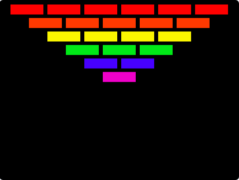
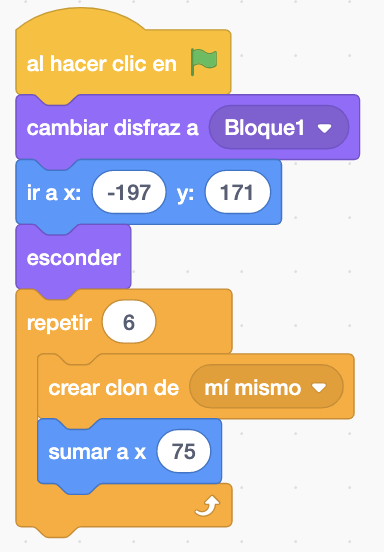
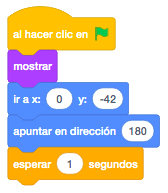
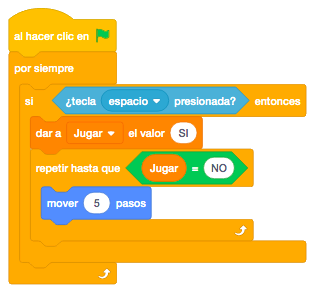
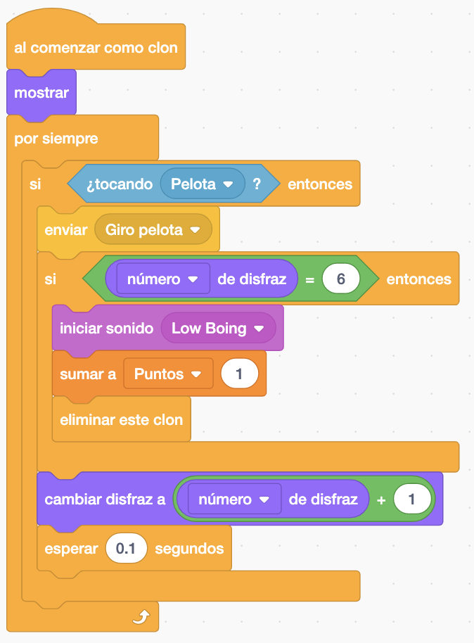
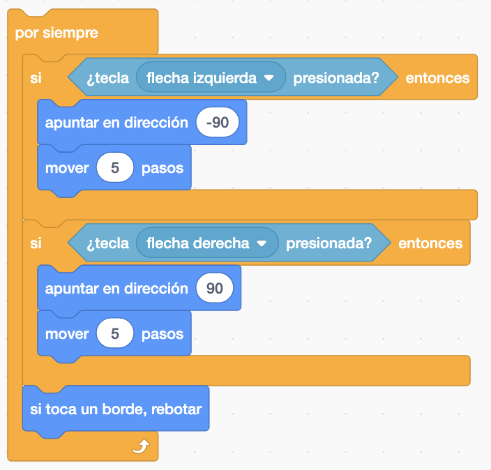
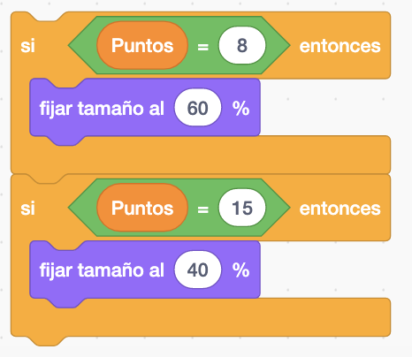
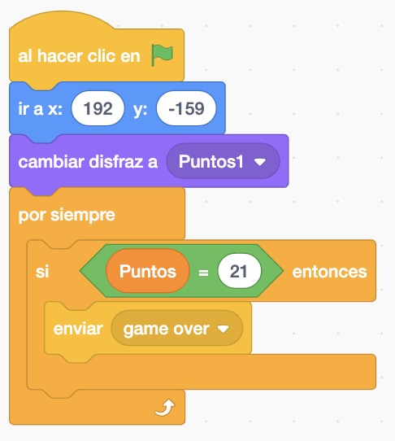

Barra, Pelota, Bloques, Puntos, Game Over.
Necesitamos un Escenario con fondo negro.
El juego consiste en que la pelota tendrá que rebotar en la barra y en los bloques que iran cambiando de color cada vez que les demos y se iran eliminando.

Inicializamos Puntos y posicionamos la Barra.

Creamos clones de los bloques. Cada fila tendra un disfraz de un color diferente. Empezaremos con el disfraz "Bloque1". En la primera fila crearemos 6 bloques sumando la X para ir posicionando los bloques. Hay que acordarse que el bloque original se esconde y el clon se muestra.


Para crear la siguiente fila de clones tendremos que posicionar la X, bajar la Y y cambiar al siguiente disfraz. Este bucle iria a continuación del anterior repetir.

Para tercera fila de clones serán 4 clones y empieza en X = -119 e Y = 116 y cambiar de disfraz.
Cuarta fila de clones serán 3 clones y empieza en X = -82 en Y = 88 y cambiar de disfraz.
Quinta fila de clones serán 2 clones y empieza en X = 42 en Y = 58 y cambiar de disfraz.
La última fila de clones será 1 clon y empieza en X = -5 e Y = 31 y cambiar de disfraz.
Las posiciones son orientativas dependerá del tamaño de los clones.
Nos quedaria saber como gestionar que tendriamos que hacer cuando la pelota toque a los bloques.
Si el bloque toca a la pelota hacemos un "enviar Giro pelota" que tendrá su recibir en la pelota. Si tenemos el disfraz 6 (hemos llegado al último disfraz) y hacemos un sonido, puntos y eliminamos el clon. Y si no cambiamos el disfraz al siguiente.

La barra la moveremos con las flechas derecha e izquierda

Y si llegamos a los puntos 8 ó 15 modificaremos el tamaño de la barra más pequeña para que el juego sea más dificil.

En el Objeto de puntos cuando lleguemos a 21 puntos terminara el juego y aparecera un Game Over.

Tendremos también "al recibir Vida" cuando nos quiten vidas y cambiaremos el disfraz y si llegamos al disfraz 5 haremmos un Game Over y terminara el juego.
El Game Over al principio estára escondido y cuando recibamos el Game Over lo mostraremos
Y el juego quedaría así.

Para descargarte el juego terminado pulsa aquí.